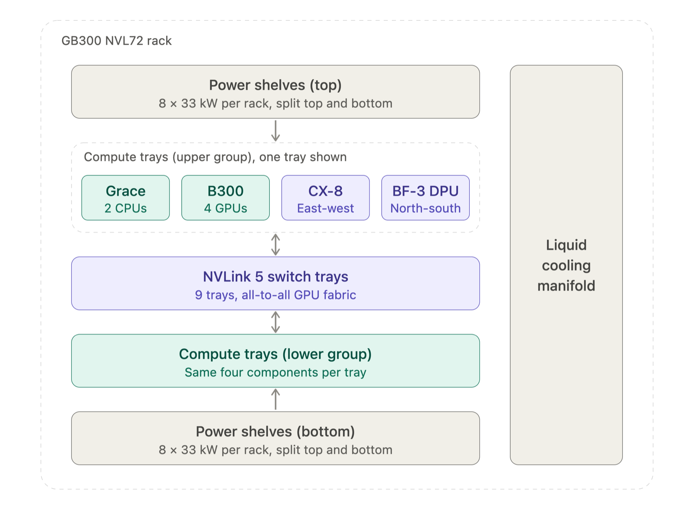
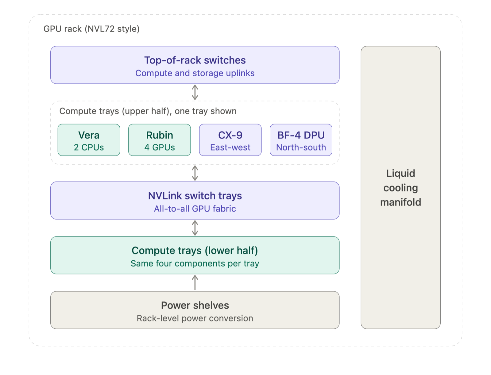

Inside the NVL72
How a prompt like yours is processed on an NVIDIA GB300 NVL72, a rack-scale system that runs 72 GPUs as one.
Four networks in an AI data center
| Network | What it carries | Your prompt's role |
|---|---|---|
| Front-end (in-band) | User and API traffic, SSH, DNS, scheduling, container registries. Standard Ethernet, "north-south". | Your request arrives and your reply leaves here. |
| Compute fabric | GPU-to-GPU traffic. NVLink inside the rack; InfiniBand or Spectrum-X Ethernet between racks. Lossless and low-jitter, "east-west". | Where the model's layers exchange data while processing your tokens. |
| Storage | High-throughput access to shared storage: model weights, datasets, checkpoints. | Model weights load from here before serving starts. |
| Out-of-band (OOB) | Remote power, serial console, temperature and power sensors. Works even when a server is down. | None. It keeps the hardware running. |
The path into the rack
- Front-end network. The request reaches a serving node over Ethernet, typically through a BlueField DPU, which offloads networking, security, and storage tasks from the CPU.
- Grace CPU. The host side of the serving software turns text into tokens, schedules work, and batches your request together with many other users' requests.
- Blackwell Ultra GPUs. The model's weights are split across many GPUs. Each layer's work is divided among them, and they exchange partial results over NVLink at every layer.
- Back out. Each new token is turned back into text and streamed out through the front-end network to your laptop.
GB300 NVL72 at a glance
Simplified. Power shelves and management are omitted.
Why it matters: a frontier model is too large for one GPU. NVLink lets all 72 GPUs share work as if they were one giant accelerator, so the constant layer-by-layer traffic stays inside the rack instead of crossing the slower data center network.
The rack is fully liquid-cooled.
Source: NVIDIA GB300 NVL72 datasheet. product page
Two rack offerings from AI infrastructure providers
GB300 NVL72 today, Vera Rubin NVL72 next
When AI infrastructure providers (cloud providers and GPU clouds) sell rack-scale AI compute, it comes down to two main offerings: the GB300 NVL72, built on Blackwell Ultra, and the next-generation Vera Rubin NVL72. Both use the same rack design: compute trays above and below a bank of NVLink switch trays, with power shelves and a liquid cooling manifold. What changes is the silicon inside each compute tray.
GB300 NVL72 (Blackwell Ultra)

Vera Rubin NVL72 (with BlueField-4)

| Per compute tray | GB300 NVL72 | Vera Rubin NVL72 | What it does |
|---|---|---|---|
| CPU | 2 × Grace | 2 × Vera | Runs the serving software, tokenizes, batches requests |
| GPU | 4 × B300 | 4 × Rubin | Runs the model: prefill and decode |
| East-west NIC | ConnectX-8 | ConnectX-9 | GPU-to-GPU traffic between racks (scale-out compute fabric) |
| North-south DPU | BlueField-3 | BlueField-4 | Front-end traffic in and out: user requests, storage, security |
| Per rack | |||
| NVLink | NVLink 5, 130 TB/s | NVLink 6, 216 TB/s | All-to-all fabric that makes 72 GPUs act as one |
| GPU memory | 20 TB HBM3E | 20.7 TB HBM4 | Holds model weights and the KV cache |
For a security audience, the BlueField DPU is the interesting part: it sits on the north-south path, where a prompt enters and leaves the rack. Diagrams are simplified. Specs: NVIDIA GB300 NVL72 and Vera Rubin NVL72 datasheets; Vera Rubin figures are NVIDIA projections. Key Terms →
Two phases of inference
1 · Prefill: reading the prompt
- All of your input tokens are processed at once, in parallel.
- This phase is compute-bound: it keeps the GPU's tensor cores busy.
- It produces the KV cache, the model's working memory of your context, stored in HBM.
- A long prompt (like Claude Code's whole context) means a longer wait before the first token: time to first token.
2 · Decode: writing the reply
- Output is generated one token at a time. Each token depends on all the ones before it.
- Every step re-reads the model's weights and the KV cache, so this phase is memory-bandwidth-bound. That's what the 576 TB/s is for.
- This is why replies stream in word by word.
- The KV cache grows with every token, eating into the 20 TB of HBM.
How AI factories squeeze out more tokens
- Batching: many users' requests share each pass through the GPUs, so the weights read from memory serve many requests at once.
- Prompt caching: the KV cache for a repeated prefix is kept and reused. This is why Claude Code can resend its whole context every turn without reprocessing all of it. see the prompt journey
- Disaggregated serving: NVIDIA Dynamo runs prefill and decode on separate groups of GPUs, since they stress different resources. Dynamo
- Lower precision: FP4 numbers take a quarter of the memory of FP16, so more of the model and cache fits in HBM and moves faster.
- Scale-out: racks connect to each other over InfiniBand (Quantum-X800) or Spectrum-X Ethernet. This matters most for training; a single inference job often fits in one rack.
What's next: Vera Rubin NVL72
NVIDIA's next rack keeps the 72-GPU design: 72 Rubin GPUs and 36 Vera CPUs, 20.7 TB of HBM4, 216 TB/s of NVLink 6 bandwidth, ConnectX-9 SuperNICs, and BlueField-4 DPUs. NVIDIA projects up to one-tenth the cost per million tokens of GB200 NVL72.
Source: NVIDIA Vera Rubin NVL72 datasheet. Performance figures are NVIDIA projections.